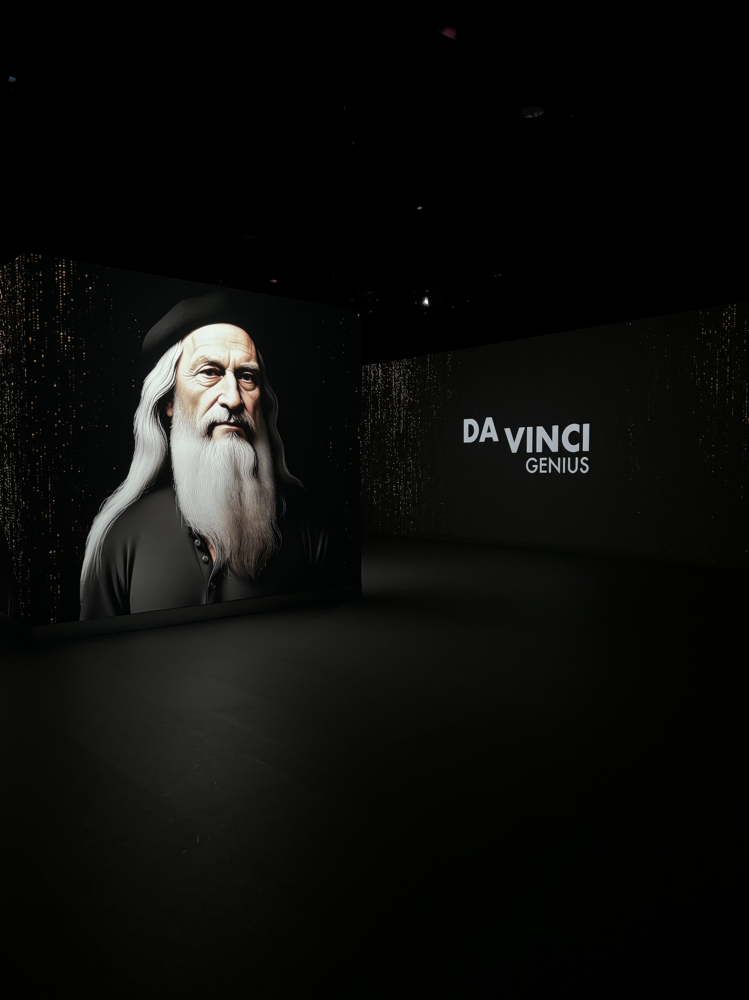
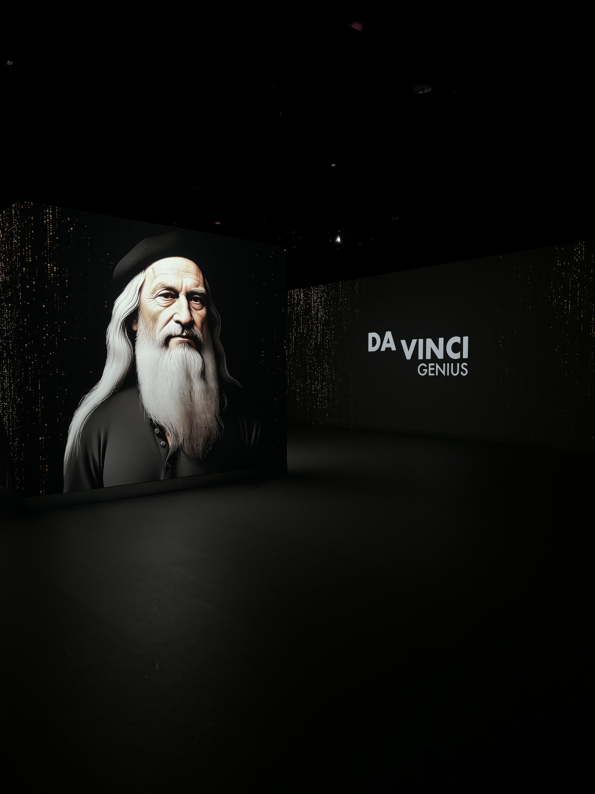

Ik ben Louise Tichelaar. ik ben 20 jaar en ik studeer Cmd aan de HvA.
Ik woon in Krommenie. Ik werk naast mijn studie als Cassiere B bij de Albert Heijn.
In mijn vrije tijd sport ik graag. Ik sport 4 keer in de week in de sportschool. Daarnaast vind ik het leuk om te tekenen.


 
